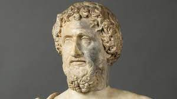

Filosofos Pré Socráticos
Os filósofos pré-socráticos fazem parte do primeiro período da filosofia grega. Eles desenvolveram suas teorias do século VII ao V a.C., e recebem esse nome, pois são os filósofos que antecederam Sócrates. Esses pensadores buscavam nos elementos natureza as respostas sobre a origem do ser e do mundo. Focando principalmente nos aspectos da natureza, eram chamados de “filósofos da physis” ou "filósofos da natureza". Foram eles os responsáveis pela transição da consciência mítica para a consciência filosófica. Assim, buscaram dar uma explicação racional para a origem de todas as coisas. A mitologia grega explicava o universo através da cosmogonia (cosmo, "universo", e gónos, "gênese" ou "nascimento"). A cosmogonia dá sentido a tudo o que existe através da ideia de nascimento a partir de uma relação (sexual) entre os deuses. Os filósofos pré-socráticos abandonaram essa ideia e construíram a cosmologia, explicação do universo baseado no lógos ("argumentação", "lógica", "razão"). Os deuses deram lugar à natureza na compreensão sobre a origem das coisas. A filosofia nascida com esses primeiros filósofos deu origem a toda uma produção de conhecimento e de representação da realidade. Toda essa construção serviu como base para o desenvolvimento da cultura ocidental.
TÁLES DE MILETO
"Tales de Mileto é considerado o primeiro filósofo da tradição ocidental. Assim como os outros pensadores do período pré-socrático, Tales buscava compreender qual é verdadeira origem do Universo, refutando a mitologia grega, que apresentava narrativas originárias que explicavam de maneira fantasiosa o modo como o Universo tinha sido formado." "Tales iniciou o primeiro movimento filosófico (sem saber ao certo que teria tanta importância), que perduraria mais de cem anos. Ele foi o primeiro ocidental de que se tem registro a questionar as afirmações mitológicas sobre a origem da natureza. "Estima-se que ele tenha dado origem a uma busca pelo elemento originário (que os gregos chamavam de arché ou arkhé) da natureza (que, no vocabulário grego, era representada pela palavra physis). Após incansáveis observações, o filósofo especulou que a origem de tudo estaria na água. Esse primeiro impulso da Filosofia, por estudar e observar o Universo (cosmos), ficou conhecido como cosmologia. Essa afirmação de Tales deu origem a todo o conhecimento posterior, pois ela deu origem a um processo de tentativa de entendimento racional da natureza, o que fez nascer a filosofia. A filosofia, na época, consistia em um conjunto de conhecimentos cultivados sistematicamente, que compreendiam Ciências Naturais e Matemática. Mais tarde foram incorporadas à filosofia a ética, a política, a metafísica, a teoria do conhecimento, a lógica, a estética etc. A Filosofia, por sua vez, deu origem às ciências que foram subsídios essenciais para a elaboração das técnicas, das mais rudimentares até as mais avançadas que nos permitem, hoje, desenvolver a nossa alta tecnologia. Isso significa que todo o conhecimento avançado que temos hoje se originou, primeiramente, na filosofia iniciada por Tales. Apesar de ter sido o primeiro filósofo, Tales não criou a palavra “filosofia”. Aristóteles atribui essa criação ao filósofo pré-socrático Pitágoras de Samos.